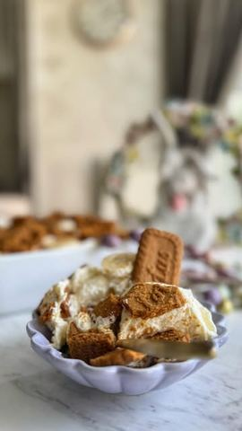

Moja beleška
Sačuvano
Ocena
Savršen ukus, prelepa kremasta tekstura, idealan dezert ukoliko vam je slatkiš potreban sad i odmah, nema pečenja, kuvanja, samo smućkaj, iseckaj, usitni i izruči.. 😋
Sastojci
- Sastojci
Priprema
Umutite mikserom hladno mleko sa slatkim kondenzovanim i dva pudinga od vanile koja se ne kuvaju, pa odložite u frižider. Umutite slatku pavlaku ( nema potrebe da bude previše čvrsto umućeno) Spatulom sve povežete. U činiju sipate pola smese pa skoro sve banane iseckane na kolutiće (par možete ostaviti za dekoraciju) i preko toga udrobljen lotus keks (polovinu). Ponovite fil - keks i dodajte koji kolutić banane. Idealno bi bilo da sačekate da se malo progladi 😍 Uživajte 🌸
Originalni opis sa Instagrama
Banana-lotus sladoled tortica 🌸 Savršen ukus, prelepa kremasta tekstura, idealan dezert ukoliko vam je slatkiš potreban sad i odmah, nema pečenja, kuvanja, samo smućkaj, iseckaj, usitni i izruči.. 😋 Sastojci: •350ml hladnog mleka •1 zasladjeno kondenzovano mleko (300ml) •2 pudinga od vanile koja se ne kuvaju •400 ml slatke pavlake •3 veće banane •200 gr lotus keksa Umutite mikserom hladno mleko sa slatkim kondenzovanim i dva pudinga od vanile koja se ne kuvaju, pa odložite u frižider. Umutite slatku pavlaku ( nema potrebe da bude previše čvrsto umućeno) Spatulom sve povežete. U činiju sipate pola smese pa skoro sve banane iseckane na kolutiće (par možete ostaviti za dekoraciju) i preko toga udrobljen lotus keks (polovinu). Ponovite fil - keks i dodajte koji kolutić banane. Idealno bi bilo da sačekate da se malo progladi 😍 Uživajte 🌸 • • • #banana #lotus #sladoled #torta #tortica #brzoilako #ukusno #desert #idejezadezert #slatkisi